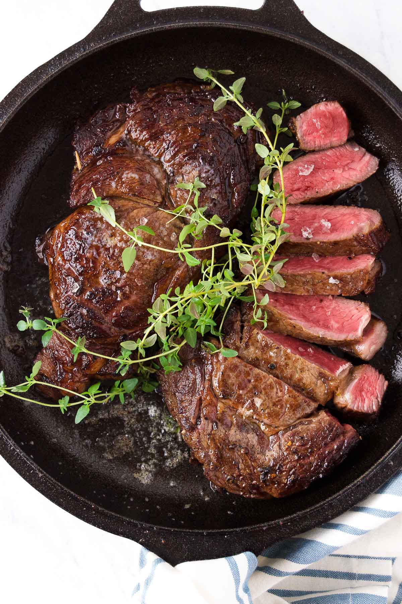

Marinated Rib-Eyes

Actually, this is an excellent marinade for any steak. The marinade mainly consists of Worcestershire sauce and brown sugar. The sugar makes the steaks tender and gives just a hint of sweetness. I sometimes add some Dijon mustard or red pepper flakes for a little zing.
Ingredients
- 4 (1/2 pound) rib-eye steaks
- garlic powder to taste
- onion powder to taste
- salt and pepper to taste
- 1 ¾ cups Worcestershire sauce
- ⅓ cup brown sugar
Steps
- Season the steaks with the garlic powder, onion powder, salt, and pepper, and set aside.
- Pour the Worcestershire sauce and brown sugar into a large resealable plastic bag, seal, and shake to mix. Pour half of the marinade into another large resealable bag. Place two steaks in each bag, and turn to coat. Squeeze out excess air, and seal the bags. Refrigerate for at least 1 hour.
- Preheat grill for high heat. Drain the marinade from the steaks into a small saucepan, and bring to a boil; boil for several minutes.
- Brush grill grate with oil. Grill steaks 7 minutes per side, to desired doneness. Baste often with the boiled marinade during the final 5 minutes of cook time.